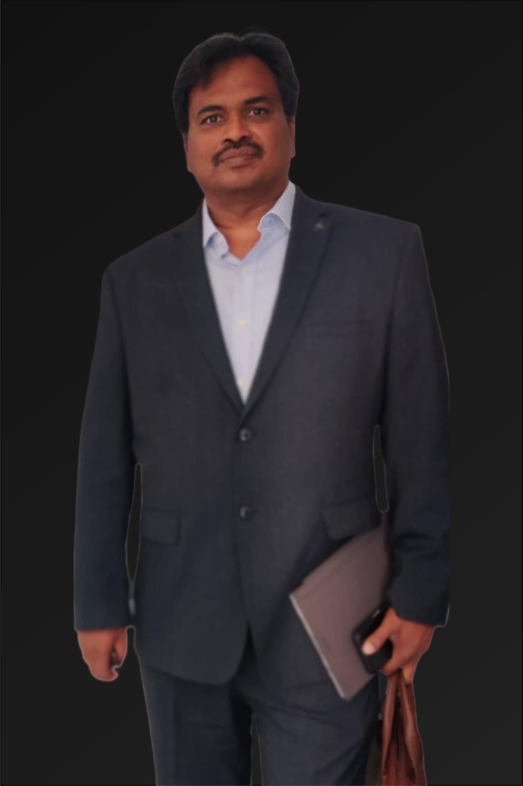

Chief Marketing Officer
As the Chief Marketing Officer (CMO) ofNeuroPi, I bring over 25 years of experience defined by a blend of innovative marketing strategies, business acumen, and an unwavering belief in the power of technology to improve lives. Having been deeply involved in the wellness tech space, I understand how to position cutting-edge products to meet the needs of modern consumers—from consumer behavior insights to customer engagement strategies. At NeuroPi, my role is to lead our marketing efforts and communicate our vision of human performance optimization to audiences across education, wellness, sports, and defense.
I have extensive experience in technology and research, product development, project implementations, and business consultations. With a track record of successfully launching and scaling wellness-focused technology products, I am passionate about leveraging my marketing expertise to promote NeuroPi's mission to optimize human potential through genetics, neuroscience, and AI.
I've had the privilege of working on projects for the Government of Andhra Pradesh, Telangana, Meghalaya, Jharkhand, Nagaland, Goa, Kerala; private sector giants like Reliance, Vedanta, Jindal Steel Works, and Kakinada Port; and in defense & civil aviation, including CIAL (Cochin International Airport).
Over the years, I’ve received several awards for marketing leadership in the Wellness Tech industry. The most prestigious was being felicitated by the A.P. Differently Abled & Senior Citizens Assistance Corporation on World Braille Day for contributions to healthcare services for blind children.